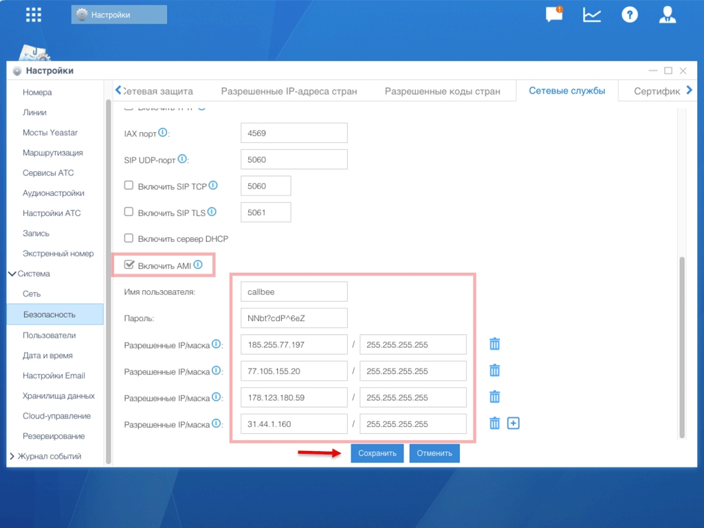
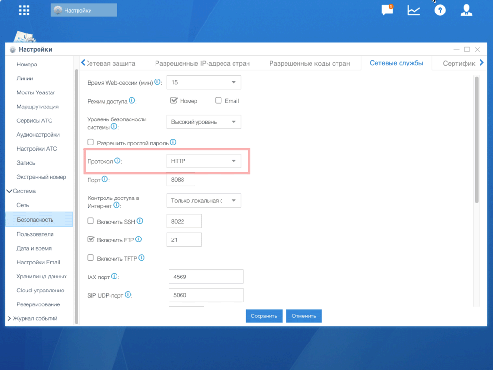

Настройка AMI для Yeastar S-серия
Asterisk Manager Interface (AMI) — встроенный в Yeastar S-серию служебный интерфейс, через который Callbee получает события о звонках (начало, ответ, завершение) и управляет вызовами (инициирует исходящие, переадресацию). Без AMI интеграция работать не будет.
В отличие от FreePBX, в Yeastar S-серии AMI настраивается через веб-интерфейс АТС — без SSH и редактирования конфигурационных файлов.
Безопасность — главное
AMI даёт полный контроль над вашей АТС. Никогда не открывайте порт 5038 для всего интернета, всегда ограничивайте доступ по IP и не используйте стандартные логин/пароль (cdr/cdr).
АТС за NAT
Если Yeastar стоит в локальной сети за роутером, порт 5038/TCP нужно пробросить на роутере: внешний 5038 → локальный IP АТС, порт 5038. Ограничьте источник IP-адресами Callbee. Настройки для конкретных моделей роутеров вы делаете самостоятельно.
Что понадобится
Шаг 1. Войдите в админ-панель Yeastar
Откройте браузер и перейдите по адресу АТС:
https://<IP-адрес-АТС>Войдите под учётной записью администратора. Стандартный логин admin — если вы его не меняли, смените перед настройкой Callbee.
Шаг 2. Откройте настройки AMI
Перейдите в Настройки → Система → Безопасность → Сетевые службы.
На странице найдите блок AMI:

Шаг 3. Включите AMI и задайте учётные данные
- Поставьте галочку «Включить AMI»
- В поле «Имя пользователя» введите логин — например
crm-to-callbee - В поле «Пароль» введите сгенерированный пароль (16+ символов)
Пароль
- Длина — не меньше 16 символов
- Нельзя использовать логин пользователя AMI,
admin,password,cdr, номер телефона, имя компании - Сохраните пароль в менеджере паролей — он потребуется при создании сервиса в личном кабинете Callbee
Шаг 4. Ограничьте доступ по IP
В поле «Разрешённые IP/Маска» пропишите IP-адреса сервиса Callbee:
185.255.77.197/255.255.255.255
77.105.155.20/255.255.255.255
31.44.1.160/255.255.255.255
178.123.180.59/255.255.255.255Не оставляйте 0.0.0.0/0.0.0.0
Эта маска открывает AMI для всего интернета. Это критическая уязвимость — злоумышленник с валидными credentials сможет инициировать международные звонки с вашей АТС (fraud).
Шаг 5. Выберите протокол подключения
Если на АТС не установлен валидный SSL-сертификат, измените протокол AMI с HTTPS на HTTP:

HTTPS или HTTP
Callbee поддерживает оба варианта. По умолчанию Yeastar S использует самоподписанный SSL-сертификат — Callbee его примет, но для надёжности удобнее HTTP внутри доверенной сети с белым списком IP.
Шаг 6. Сохраните и примените настройки
Нажмите «Сохранить». Yeastar попросит применить изменения — подтвердите, АТС перезапустит модуль AMI (обрыва звонков не будет).
Шаг 7. Проверьте подключение
На компьютере в той же сети (или с пробросом портов) выполните:
nc -vz <IP-АТС> 5038Ожидаемый ответ: Connection to <IP-АТС> 5038 port [tcp/*] succeeded!
Если Connection refused или timeout — вернитесь к:
Шагу 3 — проверьте что AMI включён и настройки сохраненыШагу 4 — ваш IP не в белом списке (для локальной проверки добавьте свой IP)- Пробросу портов на роутере
Частые проблемы
Authentication failed в логах Callbee
Пароль в настройках AMI не совпадает с указанным в личном кабинете. Проверьте отсутствие пробелов в начале/конце, откройте сервис в my.callbee.io и введите пароль заново.
События звонков не приходят Ваш белый список IP в «Разрешённые IP/Маска» не содержит все IP Callbee — адреса могут обновляться. Сверьтесь со списком на странице IP-адреса сервиса.
После перезагрузки АТС интеграция отваливается Некоторые версии прошивки Yeastar при холодной перезагрузке сбрасывают флаг «Включить AMI». Обновите прошивку до последней стабильной или включите AMI заново.
Не видно раздела «Сетевые службы» Раздел доступен только администратору. Если вы вошли под ограниченной учёткой (оператор, IP-телефонист) — попросите владельца АТС выдать вам права администратора или сделать настройку за вас.
Через роутер порт не открывается
На роутерах MikroTik и Keenetic часто требуется отключить UPnP и явно добавить правило Destination NAT → Masquerade в разделе IP → Firewall → NAT (MikroTik) или Переадресация (Keenetic).
AMI настроен!
Переходите к следующему шагу в зависимости от модели вашей АТС:
- S50 / S100 / S300 — Настройка API (для доступа к записям разговоров и расширенным функциям)
- S20 — Настройка FTP (API в S20 отсутствует, записи публикуются через FTP)